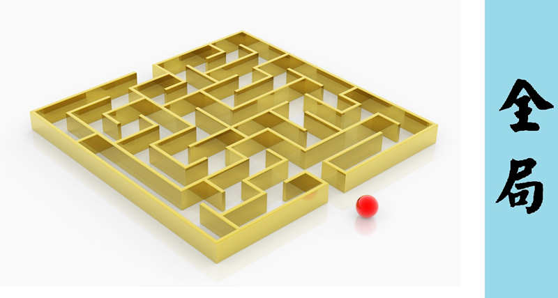

时间，是很玄的东西，在我们不知不觉中飞快地流逝！首先祝大家新春快乐！
这一年我们经历了很多，暴雨浇灌我们的心灵，让我们懂得得与舍，作品展上看到家长的眼光，我们渐渐明白父母是我们的依靠，我们是父母的希望，种种吧，但是更多的是默默的学习！枯燥吗？不见得……
总结一:反复
今年感触最多的词是反复，感受最深的也是反复，天下没有一步登天，只有在足够的铺垫下才有一鸣惊人，学习也是这样，在学习上，不要奢望一次两次就学会学通！我们要向“牛”学习，我们的“胃”消化能力还不强的时候，要把“食物”倒腾几遍，最后才会彻底消化！
说说大话设计模式这本书，第一遍看书，很朦胧，迷迷糊糊的感觉，第二遍看他总结它的时候，稍微有点调理，但是最觉得隔了层窗户纸，实践的时候，觉得我们认识的太少太少。每次看的感觉都不同，但是在这么多次的理解之后，我感觉仅仅是看到了冰山一角！借用电影作品中的一句台词“只有看到了高山，我们才知道自己有多么渺小！”反复就是让我们逐渐认识高山的过程！
反复有一个特征就是变化，只有变化才说明有生命力，就像这个世界一样，适者生存，适应变化的人生存，每一次的反复我们都是在进行“旧”的内容，但是每一次得到的却和自己以前的有些不同，有时候截然相反，这个道理千年前我们的祖先就已经告诉我们“温故而知新”。
在这一年的学习中我们的作品展，第一次做系统，学习面向对象，学文档，画图，学vb.net，每一次的前进都有以前道路的影子，我们重复做了很多事，但是每一次的想法和得到都不同。
反复使我们走了一点弯路，却也让我懂得什么是大的方向，相比于以前那条充满迷雾的道路，这次他有了一个大概的方向，有了方向就等于有了希望，盼头！

总结二：囫囵吞枣
学习有很多种方法，我们从小接触到的方法，有些适合自己，有些必然不适合自己，换一个大的环境吧，有些方法在当今千变万化的世界中，已经显得那么笨重不堪！我们需要一种方法，用以保证我们的效率！
举一个例子，就是大街上跑的汽车，生产汽车的工艺最初是手工生产，告诉厂家你要什么，厂家生产什么，那时候的汽车是奢饰品，仅仅有为数不多的人拥有，当工艺向前发展，单个零件或者部件的成本降低，需求的几何倍数扩张，有个天才的发明是流水线，它得以让汽车进入寻常百姓家！
流水线就是我们最终的方法吗？肯定不是，因为在今天“丰田生产方式”被大众所认同，跟随时代发展而变化是每个好的方法必由之路！囫囵吞枣恰恰如此，找到符合学习规律的方法，让我们不在淹没在某个细节或者门槛上！
我来提高班从2011年暑假算起到现在一年半了，提高班逐渐让我适应这里的生活，改变了我很多臭毛病，有了一群“刚刚”的战友！在这里我们总在犯错，一步一步又重回道路上来，成长就是这样吧！